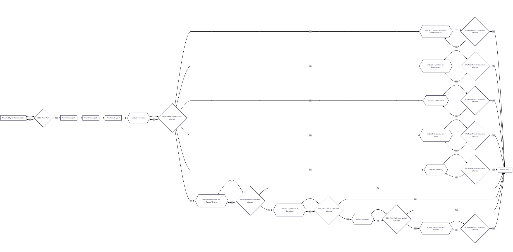
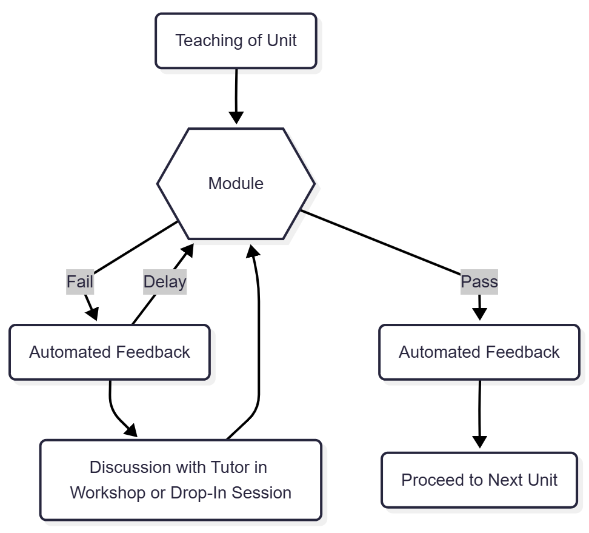

STACK Modular Mastery-Based Assessment System
Joel Scott
Background and Context
MATH1040 at the University of Queensland (UQ) is a foundational mathematics course, with topics including statistics (counting & probability, discrete random variables, continuous random variables), sequences and series, functions (quadratic, logarithmic, exponential, non-linear, trigonometric), differentiation and its applications, and integration and its applications are studied. This course is designed to cover fundamental ideas to prepare students who did not study an equivalent course in high school for tertiary studies in a range of mathematically dependent disciplines.
Traditionally assessment during this course has been in the format of a series of paper-based assessments with each task being released in sequence before being submitted during tutorials for marking. At the middle and end of the semester, written exams in formal examination conditions are conducted. This is a relatively large course within the school of Mathematics and Physics (SMP).
During the summer semester, where the class cohort is much smaller a paper based ‘multiple attempt’ assessment was introduced with some success however this model is still comparatively labour intensive as it requires generation of new tasks (partially automated through the ‘Smart Ass’ system) and manual marking. An interest in Mastery-Based Learning at the high school level led to investigations into the possibilities of converting the paper-based assessment to a model where students could have multiple attempts to successfully demonstrate their understanding of the content for a give topic.
The goal with the SMMBAS was primarily to improve opportunities for students to demonstrate learning, based in the assumption that there is negligible difference between a student demonstrating mastery of a concept early in the course and late in the same course in terms of their capacity to carry it into future studies. This is based in Bloom’s findings that when students are given targeted feedback and support, along with multiple attempts at assessment, they are able to demonstrate significantly greater levels of understanding than in traditional models of teaching and learning.
Implementation
After initial testing, a new Moodle server was set up to integrate with UQ’s existing Blackboard server via LTi the new Moodle course was modelled on the existing modular nature of the course with one syntax practice module, three prior knowledge modules and ten content modules for the course. The pass mark for the syntax module was set at 100% with content modules set at 80% with maximum three attempts and highest grade recorded.

The syntax module did not assess any mathematical understanding (all required mathematics were provided within questions, the goal being simply to ensure that students were exposed to ‘typing mathematics’ which many would not have previously done. The purpose of the prior knowledge modules was to ensure that students were exposed to the types of content they were expected to already have some level of familiarity with. This data was underutilised in the pilot project and could provide powerful insights into common gaps which could be addressed to some extent in self-paced learning modules or additional tutorial sessions.
Each module had a range of questions with randomisation applied at the question level and ad the variable level. The questions included use a range of inputs including algebraic, equivalence reasoning, multiple choice and jsxgraph interactives to capture student responses. The goal was to provide repeatability in the assessments without students having identical questions as well as providing detailed feedback. Additionally, tutors in the synchronous sessions were given access and training to support students in understanding feedback and discovering ‘false negatives’ where they arose.
Initially, access to the modules was password protected with students only able to access the password by attending synchronous tutorial sessions (either face-to-face or online). This restriction was dropped later in the course as unnecessarily onerous. In future iterations of this style of system, it would likely be far more effective to use access to the tutors for feedback and grade adjustment as the motivation for attendance rather than the more ‘punitive’ measures above.
In spite of testing performed by the development team, throughout the semester as students engaged with the content some issues with questions were detected. These were dealt with by a combination of correcting the marks for students and adjusting/replacing questions within the tasks.
Results
In terms of cohort level performance, there was minimal difference between the grades achieved in the semester incorporating the SMMBAS pilot. This is actually a positive result as, even including the cost of training STACK developers and writing the initial Moodle questions, this semester’s cost per student was significantly lessened due to the lower marking labour costs of not having as many paper-based assessments. Engagement with course material and attendance for non-assessed learning sessions was similar in this semester to previous semesters, again an indication that while saving costs, this project did not seem likely to negatively impact student learning.
Analysis of the two modes of ongoing assessment (paper based ‘single shot’ assignments and the SMMBAS tasks) as predictors of exam performance showed that the two are similarly effective ( and respectively). Again not exceptional in terms of suggesting that the SMMBAS system was making a major impact on learning in and of itself but certainly that it was not making things worse – this will be considered further below. For students who were taking the course after having failed one or more times, the relationship between exam performance and performance on the modular tasks was even stronger.
In addition to the analysis of student performance, a ‘Student Led Observations for Course Improvements’ survey was conducted to gather data on student perceptions of the changes made to the course. Student data generally supported the idea that having multiple attempts at the assessment was helpful and that the level of difficulty of the tasks matched their expectations based on the course content. The most commonly referenced challenges were logistical and syntactical and would be mitigated in future implementations of the system. It should be noted that some students seemed to miss the point of the modules and indicated a preference for multiple choice of paper based (and hence manually marked) quizzes instead which would negate the detail and timeliness of feedback respectively.
Future possibilities
As this was a pilot project, there were a number of factors which, considered in hindsight, would likely have made a significant difference in the outcomes of the project.
Targeted Teaching
Students in the course were not given explicit teaching in how to engage with feedback from the SMMBAS tasks. If there had been explicit teaching of these processes, students may have better engaged with the content and the opportunity to review their feedback, consider the gaps in their understanding and hence gain a better grade.
Tutor Up-Skilling
The wealth of data available through automated marking of tasks was underutilised during the pilot project. In future iterations, it would be helpful to train tutors in accessing the data for their tutorial groups to target teaching within the synchronous sessions for the skills where students were struggling. In addition, if tutors were given opportunities to develop greater familiarity with the system, small syntactical errors could be re-marked during synchronous tutorial sessions which would have avoided some of the issues highlighted in the student survey.

As shown above, a possible model would include a delay between attempts at the module. It would also include some measure of incentivising/obligating students to engage with tutors to discuss their feedback and performance before subsequent attempts.
Utilisation of Prior Knowledge Data
The prior knowledge modules showed some common gaps in understanding and this data could have been used to inform teaching staff in beginning weeks to support gap filling. In addition, this data could be used to target additional asynchronous learning resources, potentially including additional modules with a combination of teaching and formative assessment.
Re-Allocation of Funding
With the reduced cost of labour for marking, those funds could be re-directed to facilitate additional synchronous learning opportunities. We know from Bloom’s seminal work on Mastery-Based Learning, that targeted instruction and assessment cycles have a significant impact on student outcomes. This model and others like it offer significant opportunities in this area.
Implementation of these relatively simple fixes in the process of running of the SMMBAS tasks in a future course would likely solve many of the problems identified and hopefully see improved student outcomes.